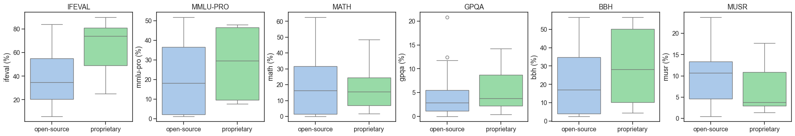

Performance and Sustainability Analysis of open-source LLM
Code
from pathlib import Pathimport osimport pandas as pdimport numpy as npimport matplotlib.pyplot as pltfrom matplotlib.colors import LinearSegmentedColormapfrom matplotlib import patchesimport seaborn as snsfrom matplotlib.ticker import PercentFormatterimport osfrom plotnine import ggplot, aes, geom_point, geom_smooth, labs, theme_bw, scale_x_log10import plotly.express as pximport plotly.graph_objects as gofrom scipy.stats import ttest_indimport statsmodels.formula.api as smf
Overview
The rapid development of Large Language Models (LLMs) has created a need to understand and compare their properties beyond benchmark performance alone. This project consolidates data from the Hugging Face API and leaderboards to enable a holistic view of the LLM landscape. By combining these dimensions, we aim to contribute to a more transparent, data-driven understanding of modern LLMs.
The project pursues both analytical and methodological objectives. From a research perspective, it explores and investigates relationships between benchmark scores and model size, and between user engagement and CO₂ consumption. From a learning perspective, it develops a complete data science workflow: collecting data through APIs and web scraping, merging and cleaning datasets, as well as visualizing and statistically modeling the results.
Methods
API
To retrieve data from the Hugging Face API, we began by exploring the API documentation and analyzing its multi-layered JSON responses to identify key metadata fields such as author, license, model type, downloads, likes, and timestamps.
The final implementation uses a Python class (HuggingFaceAPI) that loads an authentication token from a .env file for secure API access. The script retrieves the most downloaded models for the text-generation pipeline, collects comprehensive metadata, and applies regular expressions to extract model sizes (e.g., “7B”, “13B”) from model names. The processed data is saved as huggingface_llm_metadata.csv, providing a foundational dataset to be enriched with benchmark performance data from web scraping.
Scraping
The HuggingFace Open Leaderboard presents benchmark data in a dynamic table within an iframe, displaying only 28 models by default. Since automated scrolling proved unreliable, we adopted URL-based filtering via ?search=[model_name] parameters to access specific models.
The implementation uses an HFLeaderboardScraper class built with Selenium and BeautifulSoup, supporting multiple browsers. The scraper navigates the DOM hierarchy—locating the iframe and extracte data from standard HTML table elements. It incorporates multiple strategies, validation to handle absent models, duplicate entries, as well as of potential stale element issues.
The resulting dataset is incrementally written and shares a common identifier (Model/modelId) with the API-collected metadata, enabling straightforward merging for analysis.
Note: Scraping HuggingFace is permitted the scraping as no robots.txt file restricts access.
Q 1 – Which models offer the best size-to-performance ratio?
To explore which models offer the best size-to-performance ratio, we examined the relationship between model parameters (in billions) and average benchmark scores using a LOESS smoother. We keep the x-axis linear to maximize readability: absolute size differences and where performance plateaus are immediately visible.
Figure 1: Average benchmark score vs. model size with LOESS smoother
The LOESS curve reveals non-linear scaling: performance rises quickly for small to mid-size models and plateaus beyond ~20-30B, indicating diminishing returns at larger scales. The Pearson correlation coefficient confirms this strong positive relationship.
The resulting coefficient (r ≈ 0.63) confirms that larger models achieve higher benchmark scores.
While larger models dominate benchmark rankings, notable exceptions exist: Qwen 2.5-32B-Instruct achieves the highest average score (≈46.6%) despite being half the size of Meta-Llama 3 70B models. This demonstrates that model architecture, training efficiency, and fine-tuning strategies can outweigh sheer scale. Other compact models such as Phi-4 and Llama 3-8B-Instruct achieve strong scores for their size, highlighting that smaller, well-optimized models can offer efficient size-to-performance trade-offs.
NoteTop models by sizw with benchmark performance metrics
Code
benchmark_cols = ["model", "model_size", "average", "score_per_billion"]available_cols = [c for c in benchmark_cols if c in df_joined.columns]tbl_bench = ( df_joined[available_cols] .sort_values("average", ascending=False) .head(10) .copy())num_cols = [c for c in tbl_bench.columns if c notin ["model"]]tbl_bench[num_cols] = tbl_bench[num_cols].round(2)tbl_bench
Top models by size with benchmark performance metrics
We examine the environmental costs of models during their lifecycle and inference, using CO₂ cost as a proxy for sustainability. Rather than relying solely on benchmark metrics, we use user likes as a holistic measure of perceived usefulness, integrating aspects like accuracy, usability, documentation, and community engagement.
To compare models’ popularity and acceptance, we normalize likes by downloads, yielding likes per download—a metric expressing how well a model is received relative to its adoption. We visualize the joint distribution of CO₂ cost and likes per download using a bivariate kernel density estimate (KDE) with overlaid data points. This continuous representation avoids binning artifacts and reveals data structure effectively given our sample size. Moreover, the plot includes a “Balanced Best Zone” (green shaded area), defined as models in the lowest 50% of CO₂ costs and highest 50% of likes per download, indicating optimal balance between sustainability and user appreciation.
As, we can see, most models concentrate within a narrow, low CO₂ cost range, suggesting that frequently downloaded models tend to be computationally efficient—likely because users operate with limited resources and large models may not run on their hardware. A few large-scale outliers with substantially higher emissions indicate that scaling still incurs significant environmental costs. Approximately half the models achieve modest likes per download, while a smaller subset shows much higher user approval. Models in the green Balanced Best Zone combine low ecological footprint with high user value, demonstrating that strong perceived quality and sustainable design are not mutually exclusive. This subset points to promising directions for future model optimization.
Q 3 – How do open-source models differ from proprietary ones in terms of performance?
Average benchmark score by access type comparison
To examine whether model accessibility influences performance, we compared average benchmark scores of open-source and proprietary LLMs. A practical performance threshold was introduced as a visual reference. Each dot represents a model, color-coded by access type. The dashed gray line marks the 25% threshold.
While proprietary models more frequently exceed this level, several open-source models approach or surpass it, suggesting that performance parity is increasingly attainable.
Following the Hugging Face Open LLM Leaderboard convention, we define practical accuracy as achieving an average benchmark score above 25%—the approximate level at which models demonstrate consistent reasoning and instruction-following capabilities. This threshold serves as an informative benchmark, not a strict pass/fail cutoff.
To assess whether these performance differences are statistically significant, we conducted a Welch’s t-test on average benchmark scores. This test does not assume equal variances or sample sizes—appropriate given that proprietary models are fewer but sometimes larger. The result (t = -1.76, p = 0.09) indicates no statistically significant difference between groups.
To control for model size differences, we performed an ANCOVA with average score as the dependent variable, log10(model_size) as a covariate, and access type as a categorical predictor. The ANCOVA results show that model size significantly predicts performance: every ten-fold increase in parameters yields approximately a 13-point rise in average benchmark score. Crucially, access type (open-source vs. proprietary) shows no measurable effect when controlling for size. Model scale, not licensing status, is the primary driver of performance differences.
NoteWelch t-test summary
Code
d = df_joined.dropna(subset=["average","access type"]).copy()open_avg = d.loc[d["access type"]=="open-source","average"].astype(float)prop_avg = d.loc[d["access type"]=="proprietary","average"].astype(float)t, p = ttest_ind(open_avg, prop_avg, equal_var=False)print(f"Welch's t-test result: t = {t:.2f}, p = {p:.2f}")
To compare performance between open-source and proprietary models across evaluation tasks, we analyzed six benchmark metrics. Figure 3 visualizes score distributions for each benchmark using boxplots grouped by access type.
Except for MUSR, proprietary models show higher medians, particularly for IFEVAL and MMLU-PRO. However, overlapping interquartile ranges for other metrics indicate that some open-source models perform comparably.
Code
tasks = [c for c in ["ifeval","mmlu-pro","math","gpqa","bbh","musr"] if c in df_joined.columns]n =len(tasks)fig, axes = plt.subplots(1, n, figsize=(3.5*n, 3.5), constrained_layout=True) axes = axes.flatten()palette = {"open-source": "#A1C9F4", "proprietary": "#8DE5A1"}for i, col inenumerate(tasks): sns.boxplot( data=df_joined, x="access type", y=col, hue="access type", palette=palette, legend=False, ax=axes[i] ) axes[i].set_xlabel("") axes[i].set_ylabel(f"{col} (%)") axes[i].set_title(col.upper())for j inrange(i+1, len(axes)): axes[j].axis("off")plt.show()

Figure 3: Task-level performance distributions by access type
Conclusion
This project demonstrated a complete data science workflow—from data collection through API interaction and web scraping, to data cleaning, merging heterogeneous datasets, and statistical modeling. We developed skills in handling dynamic web content with Selenium, processing complex JSON structures, and applying appropriate statistical methods (correlation, t-tests, ANCOVA) to answer domain-specific research questions. The analysis reinforced the importance of normalizing metrics for fair comparison and controlling for confounding variables when drawing conclusions.
A significant limitation is sample size. The HuggingFace Open Leaderboard displays 4,756 models as of November 2024, but we scraped only models retrieved from the API due to our method’s inability to handle the scrollable table feature. This constraint affects our analysis in multiple ways: trends remain unclear (e.g., we cannot draw conclusions about models exceeding 20 billion parameters in Figure 1), statistical power is limited, and interpretations carry greater uncertainty. A more comprehensive scraping approach would enable collection of significantly more benchmark observations.
In future steps, improving the scraping algorithm to handle scrollable table features would enable collection of substantially more observations, supporting more thorough statistical analysis and clearer identification of trends across the full model size spectrum.